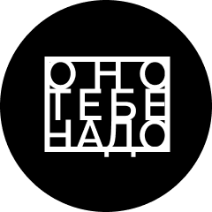

ОНО
ТЕБЕ
НАДО
Иные так расхваливают свою страну, словно мечтают ее продать.
Об аукционе
Прощайте, золочёные залы престижных аукционов, где каждый предмет словно прошёл строгую проверку на «достойность» быть выставленным на торги. Здесь не царит атмосфера снобизма и высокомерия, где оценивают вещи исключительно по их рыночной стоимости и признанию критиков. Его особенность в том, что каждый лот проходит тщательную проверку подлинности и экспертизу, гарантируя высокое качество и ценность. Аукцион стремится соединить редкие ювелирные изделия с истинными ценителями и коллекционерами, предлагая им то, что сложно найти где-либо еще.
Лоты

Фильм режиссёра, который бросил киношколу
Не просто бросил,а ушёл с первой лекции.Какой была бы ваша ставка, если бы вы не знали, что режиссёр —
Пол Томас Андерсон?
.png)
Книга, где описан
один скучный день
из жизни рекламного агента
Объёмом почти в тысячу страниц. Иногда без знаков препинания и с переходами на древнеанглийский. В ней одновременно рассказывается о 16 июня 1904 года и об истории литературы, начиная с античных времён. И это всё накладывается на эпическую поэму Гомера. Сколько бы вы поставили на «Улисса» Джеймса Джойса?
.png)
Картина, которую повторит даже
5-летний сын маминой подруги
Ну действительно, там линия, тут кружочек, а здесь и вовсе что-то похожее на инфузорию-туфельку. Никаких полей, лесов, котиков... Сколько бы вы на такое поставили, если бы не знали, что это — одна из революционных работ Кандинского?
Посмотреть больше